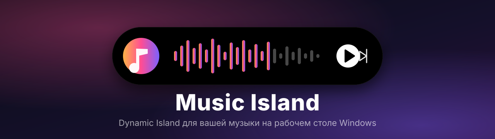

An open-source Dynamic Island music player for Windows 10/11 with Spotify, YouTube, SoundCloud and Yandex Music.
Музыкальный «Dynamic Island» для Windows 10/11 с открытым кодом: Spotify, YouTube, SoundCloud и Яндекс Музыка.
⬇ Download for Windows⬇ Скачать для Windows GitHub

Features
Возможности
Install
Установка
Download Music-Island-Setup-*.exe from Releases and run it. The installer is unsigned, so SmartScreen may warn: choose "More info, then Run anyway".
Скачайте Music-Island-Setup-*.exe из Releases и запустите. Установщик не подписан, SmartScreen может предупредить: «Подробнее → Выполнить в любом случае».
Spotify limitations
Ограничения Spotify
Spotify runs through the official web player, which does not expose like or shuffle state, so the island does not fake them. The queue and "My music" are read from the page and may break if Spotify changes its layout. Ads in the Free tier play as in a normal browser; the island does not block them.
Spotify работает через официальный веб-плеер, который не отдаёт состояние лайка и перемешивания, поэтому остров их не имитирует. Очередь и «Моя музыка» читаются со страницы и могут перестать работать, если Spotify изменит вёрстку. Реклама в Free играет как в браузере, остров её не блокирует.
MIT · Not affiliated with Spotify, YouTube, SoundCloud or Yandex.Проект независимый и не связан со Spotify, YouTube, SoundCloud и Яндексом.